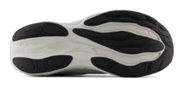
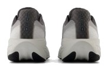

DAILY｜万能クッション
柔らかいのに、減らない。
フォーム硬度28.5ACは今回の6足で最も柔らかい。普通なら、柔らかい靴は減りやすいと考える。ところが摩耗深度は0.6mmで、推定寿命は約700kmあった。性能点3.84、コスパ点4.0と、数字のバランスがいい。
柔らかい履き心地が好きな人。ジョグ中心で、長く履きたい人。1足目に失敗したくない人。
ペースを上げる練習が多い人。軽さを最優先する人。


フォームは柔らかいが、かかとの幅は94.6mm、ヒール剛性は4ある。沈みすぎを土台とかかとの固定で抑える設計で、安定性の点は4.0になった。
摩耗深度0.6mmは、スーパーブラスト 2に次いで少ない（EVO SLと同じ水準）。¥19,800でも1kmあたり約28円に収まる。
前足部のエネルギーリターンは59.4%で、スピードの点は2.5。実測285gもあり、速く走る練習には別の靴がいい。
5点満点。計測値を当サイトのルールで点数にしたもの。
クッションと安定性、通気性、履き心地が4.0で、耐久性は4.5ある。低いのは軽さ2.0とスピード2.5で、どちらもデイリーでは比重が小さい。性能点はデイリー67足中16位。上位の靴より尖りは少ないが、コスパ点4.0とのバランスがいい。
高いほど衝撃を吸収する。
摩耗深度から推定した寿命で計算。短いほど安い。
| 1080 v14 | クリフトン 10 | ニンバス 27 | |
|---|---|---|---|
| 価格 | ¥19,800 | ¥20,900 | ¥20,900 |
| 実測重量 | 285g | 275g | 299g |
| 衝撃吸収（SA） | 142 | 147 | 136 |
| エネルギーリターン前足部 | 59.4% | 57.2% | 48.6% |
| 摩擦係数 | 0.52 | 0.49 | 0.84 |
| 摩耗深度 | 0.6mm | 1.0mm | 0.8mm |
| 性能点 | 3.84 | 3.68 | 4.01 |
| コスパ点 | 4 | 3 | 4 |
クリフトン 10より安く、減りにくい。ニンバス 27は性能点で上回るが硬く、反発も低い。柔らかさを取るなら1080が先に来る。
ドロップは6mm。摩擦係数は0.52で、ペガサス 41の約2倍ある。通気性は4と高めで、季節を選びにくい。突出した項目は多くないが、苦手な項目も少ない。
柔らかい靴は好みが分かれる。試着では、足が沈みすぎて不安定に感じないかを確かめたい。ドロップは6mmなので、高いドロップの靴から替える人は距離を少しずつ伸ばしたい。
週2〜3回のジョグで1足を長く使うなら、バランスがいい。週15kmなら推定寿命まで約11か月。久しぶりの1足にも勧めやすい。
柔らかい、減りにくい、大きな弱点が少ない。派手さはないが、最初に検討する価値のある靴である。
※本記事は海外ラボ（RunRepeat）の計測データとメーカー公表値、当サイトの計算をもとにした分析です。計測はUS9（約27cm）です。1kmあたりの費用は摩耗深度から推定した寿命での概算です。価格は当サイトの掲載値で、変更されている場合があります。